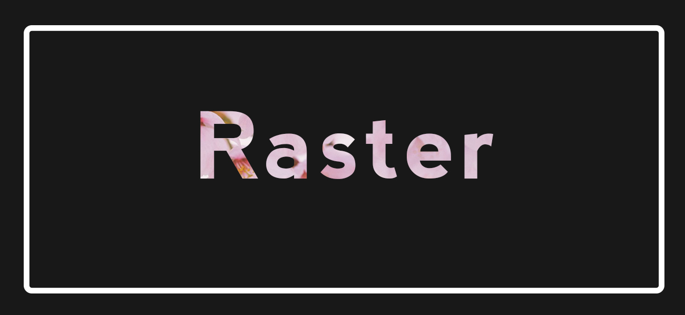
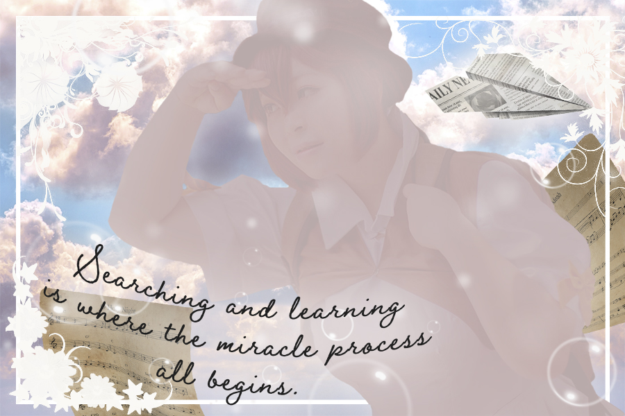

Home | Raster | Vector | Time Base Media | Print Layout | Social Media

This is my final project for my Photoshop Raster assignment, I very much enjoy soft, pastel colors, and whimsical things so that was part of the inspiration of my assignment. I took one of my old cosplay photos and worked on it using the skills I had picked up through our lessons.